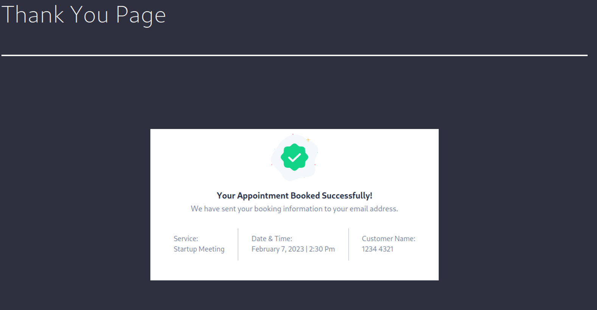
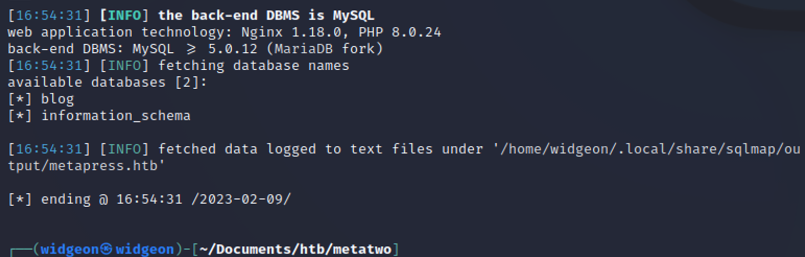
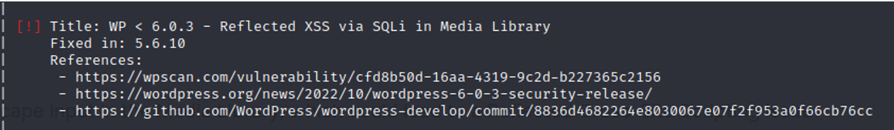

February 11, 2023
MetaTwo
Tools Needed: WPScan, SQLmap, PHP
Step 1: Start off with an Nmap Scan
nmap -sV -sC <IP ADDRESS> -oA <FILE NAME>
Looks like this will be a WordPress room and that there is a robots.txt and /wp-admin that we can visit. From our nmap scan we can see that this MetaTwo room redirects to http://metapress.htb so add that to your /etc/hosts.
Let’s start with a set of gobuster scans to do some enumeration on this website. When a CTF challenge has a website, I immediately think “gobuster and burp suite” Gobuster is a great tool to enumerate a website. It allows us to scan for potential directories, such as www.<WEBSITE>.com/dev as well as vhosts on the host such as dev.<WEBSITE>.com
This will scan for any directories that come after the main website:
gobuster dir -u http://metapress.htb/ -w /usr/share/wordlists/dirbuster/directory-list-2.3-medium.txt
This one will scan for any vhosts:
gobuster vhost -u http://metapress.htb/ -w /usr/share/seclists/Discovery/DNS/subdomains-top1million-5000.txt --append-domain
No results with the vhost scan but there are a few valid links for us to go to from the directory scan. We find wp-content, this further confirms that this is a WordPress room.
Run the tool wpscan to do some enumeration on the web page.
wpscan --url http://metapress.htb
Looks like a lot of output but not too much we can do with it, but maybe some of this info will be useful.
We need some more info, so let’s register for an account and run another scan. http://wpscan.com/register
wpscan --url http://metapress.htb --api-token <YOUR TOKEN HERE>
This scan again brought no major results so we need to try adding some plugin detection.
wpscan --url http://metapress.htb/ --plugins-detection mixed -e ap, at --api-token <YOUR TOKEN HERE> -t 450
-e ap = enumerate all plugins
at = all themes (WPScan has databases with over 2600 themes to check for vulnerabilities. This will use all of them in your scan.)
-t 450 = number of threads allocated to the scan. This makes it go faster.
With 29 vulnerabilities identified it is time to try to narrow down the links we would like to try. We have no access at the moment, so anything that says Authenticated can be automatically ignored for now.
The XSS and SQL injection vulnerabilities caught my eye first and I tried them out, but they were unsuccessful. This BookingPress is the one that worked.
https://wpscan.com/vulnerability/388cd42d-b61a-42a4-8604-99b812db2357
In between trying out exploits you can also look around the website with what we found from our initial enumeration. Looks like we can post something, but for now we do not know what.
Robots.txt shows us a wp-admin/admin-ajax.php link, but it is invalid.
The login page will look like this. You should always try common credentials and google the service being used to see if there are any commonly used credentials specific to that platform. In this case it was unsuccessful but it takes nearly no effort to try.

Metapress.htb/feed automatically downloads this file.
It does not seem like there is anything else to be done with this file. Seems like it is time to go back to try out this BookingPress exploit.
Following the link provided from wp scan we can see that there is an SQL injection being done.
https://wpscan.com/vulnerability/388cd42d-b61a-42a4-8604-99b812db2357
Doing some enumeration on the page, we are able to book an appointment. If we capture the request we can see this “wponce” value. If you right click and send this to curl, you can attempt to try the SQL injection. Send it back to Burp Suite with the -x (proxy) flag to 127.0.0.1:8080 (default burp)
Your request should look something like this.
Right click it and save it to a file. SQLmap has a cool feature where it can repeat a request that you have created or captured and will automatically perform the SQL injection for you.
Edit the file to be a normal request, and cut out all the SQL injection. You can specify to sqlmap with the -r flag that you will be using a request file, and the -p flag will let sqlmap know which field you want to attempt the injection to.
sqlmap -r <FILE.REQ> -p <INJECTION POINT> --batch
There is a github with a demo of this in action:
https://github.com/BKreisel/CVE-2022-0739
We get back some valid results and we are able to start enumerating their database.
Adding -dbs to search for databases.
We have found blog and information_schema. Information_schema has been seen before in other SQL databases (such as the one on soccer.htb) so we will try that one last.
-D = specified database --tables = enumerate tables from the specified database.
Quite a few tables are found. The one I am most interested in is wp_users because that seems like the best bet to get the information we need to ssh into the machine.
sqlmap -r <FILE.REQ> -p <INJECTION POINT> --batch -D <DATABASE> -T <TABLE> --dump
After we dump the users we’re able to get some information back.
You can’t be sure if this is a hash or an automatically generated password (but these should be a hash since it is in a database -that is good security practice.) So, let’s try those credentials out.
SSH does not work.
Neither does WordPress login.
This means that they are hashed, and we have to crack them.
Going to the hashcat website we can find a hash that looks similar in style to the ones we found in the database.
https://hashcat.net/wiki/doku.php?id=example_hashes
This one seems perfect, we are on WordPress and it looks similar to our hashes. We can now use hashcat to see if we can find the matching password in rockyou.txt (Typically HackTheBox hashes will be able to be cracked with only using rockyou.txt, if you cannot crack it with that wordlist, you may need to look at another method)
hashcat -m 400
-m 400 = the mode we chose based on what matched on the hashcat website
Wait as long as you need.
One of the passwords came up as valid, this is the hash for manager so let’s try to log in!
Password for manager
We are in!
We should double check these credentials for SSH access.
Manager does not have ssh.
Looking at the login page, we have a Media library page, so this is looking like a good path to attempt.
We can find the way to construct our payload here:
https://blog.wpsec.com/wordpress-xxe-in-media-library-cve-2021-29447/
We put our IP in the payload and follow the steps.
Upload the malicious “wav” file to the server.
Run a php server with the -S flag on the port you put in the payload. You should receive the file in a base64 encrypted format.
Base64decode.org is a nice website to see this output. You can also do this via terminal with the
base64 -d
The output of /etc/passwd does not give us much information, but we do find a user that we haven’t seen before “Jnelson”.
If we go back to our nmap scan, we did see ngnix. And by default we know that there are ngnix files at /ngnix/sites-enable/default so let’s try to get that file and read it.

This is extremely helpful, we can now see the root directory of the WordPress page. With the exploit we have we can now try to read some of the important files in this root directory.
One of the default configuration files for WordPress is wp-config.php, so we can attempt to read the file at /var/www/metapress.htb/blog/wp-config.php

We find some credentials for ftp.
Cb4_JmWM8zUZWMu@Ys
Let’s try these creds in ftp.
Look around and grab all the files.
Exit FTP and cat the files that we got.

In the send_email.php file we are able to find some more credentials for the user jnelson which we found earlier. This user likely exists on the machine, so let’s try to SSH into the machine with these credentials.
We are in! Now we can get the user flag.
We can begin our enumeration. I was unable to get linPEAS directing on the machine, so I got it on my host and hosted an http server to quickly get linPEAS on the target.
https://github.com/carlospolop/PEASS-ng/tree/master/linPEAS

Getting linPEAS onto the machine. Nothing glaringly obvious in the output, so let’s do some looking around first.
Running sudo -l gives us nothing, so we need to find another way to get root.
Doing an ls -al command reveals us a few hidden directories.
GnuPG is a complete and free implementation of the OpenPGP standard as defined by RFC4880 (also known as PGP). GnuPG allows you to encrypt and sign your data and communications; it features a versatile key management system, along with access modules for all kinds of public key directories.
https://github.com/marcwebbie/passpie
We can explore those directories a little bit more.
Looks like we found the root credentials, but they are encrypted.
You can find the private key in the ~/.passpie/ folder. It’s a hidden file so reveal it with ls -al and copy that information.
From the root.pass file, we can see this is gpg secured, so we can use the tool gpg2john to create a hash that we can crack.
Gpg2john hashfile > crackhash.txt
Wait some time for the cracking process to happen.
We get the passphrase of blink182.
Using this web page:
https://8gwifi.org/pgpencdec.jsp
we can now decrypt the message.
We have the private key, we have the encrypted message, and now we have the passphrase to use to decrypt the message we found on the machine. This should give us the root.pass (and we assume these are the root credentials)

We can try these credentials out by typing su root
We get root and can cat the root flag!
Success! MetaTwo has been pwned üòé